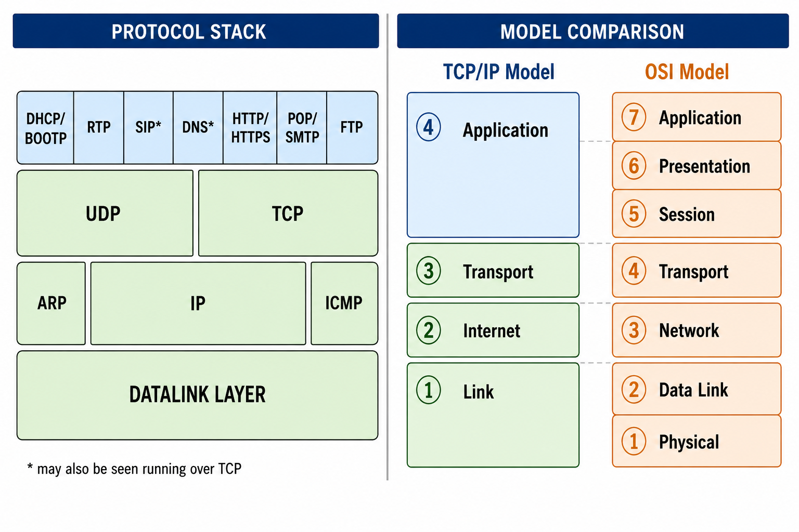
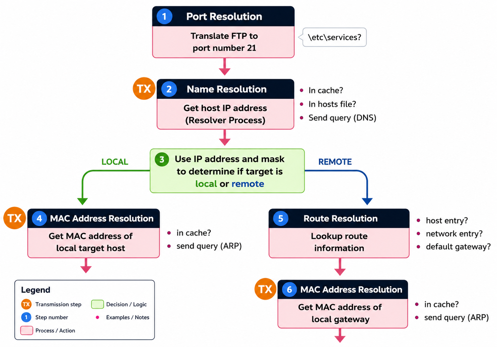
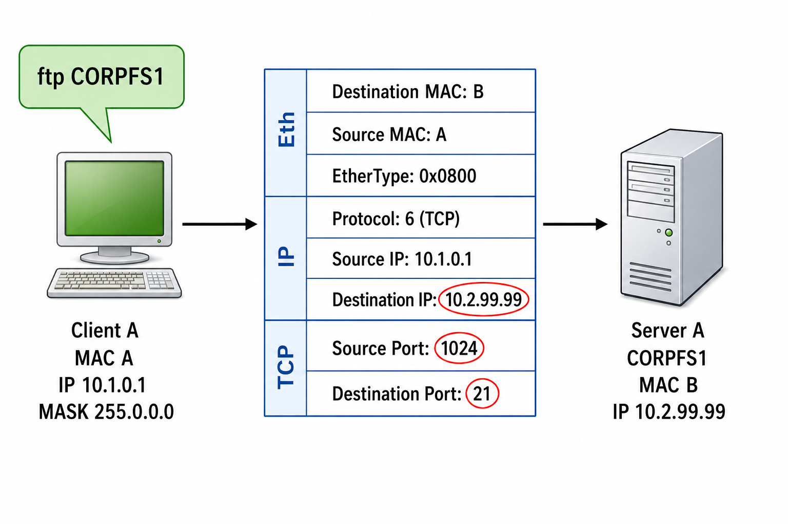
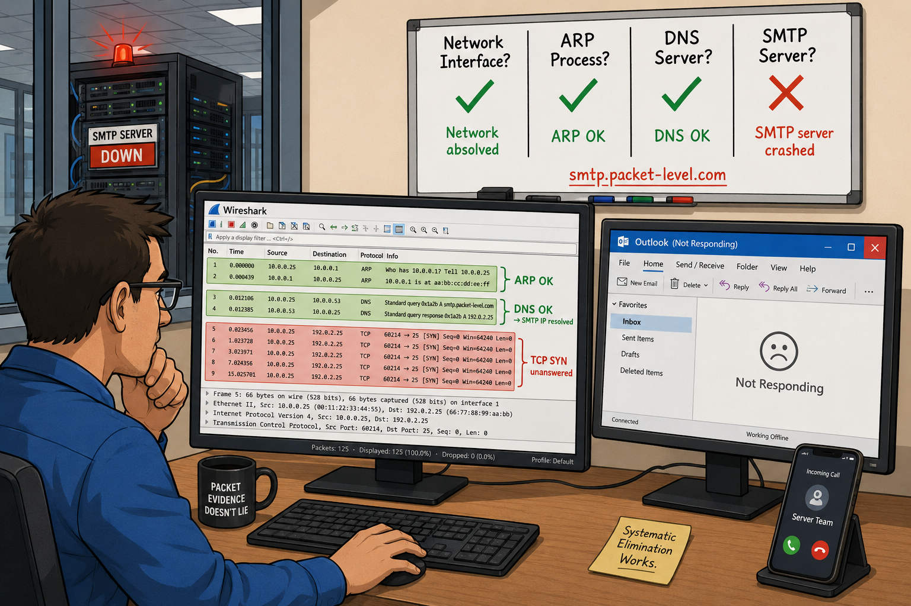

The OSI Model uses "Layer 2" (switches) and "Layer 3" (routers) terminology even though TCP/IP has its own model. Why does the industry still use OSI layer numbering instead of the TCP/IP model's layers?
IP is described as "connectionless and unreliable, providing best effort delivery." If a packet is too large for the next link and the Don't Fragment bit is set, what happens — and what ICMP message type should you look for?
TCP/IP Functionality Overview
To troubleshoot or secure a network using Wireshark, you must possess a solid understanding of TCP/IP communications. Figure 179 depicts the key TCP/IP stack elements next to the TCP/IP Model and the OSI Model.

Although TCP/IP elements map nicely to the TCP/IP Model, the OSI Model is still referenced constantly in the industry — "Layer 2" devices (switches) and "Layer 3" devices (routers) obtain their numerical designations from the OSI Model, not the TCP/IP Model. Many network faults or breaches can be attributed to TCP/IP protocol or application issues. When troubleshooting from the bottom up, first look for errors at the physical and data link layers, then move up the stack.
Key TCP/IP Stack Elements
| Protocol | Layer | Function |
|---|---|---|
| IPv4/IPv6 | Network (L3) | Routable delivery, fragmentation/reassembly, QoS designation |
| TCP | Transport (L4) | Connection-oriented, sequencing, acknowledgment |
| UDP | Transport (L4) | Connectionless, low overhead |
| ICMP/ICMPv6 | Network | Network information, ping, duplicate address detection (v6) |
| DNS | Application | Host name to IP address resolution |
| DHCP | Application | Dynamic client configuration — IP, gateway, DNS server |
| ARP | Data Link/Network | Hardware address lookup for local IPv4 devices; duplicate IP detection |
IP is connectionless and unreliable — it provides best-effort delivery without guaranteed arrival. An application needing guaranteed delivery should use TCP over IP. If a packet is too large for the next link and the Don't Fragment bit is set, the router should send an ICMP Type 3, Code 4 (Destination Unreachable/Fragmentation Needed, DF bit set) message back to the originator, which should retransmit at a smaller size.
TCP/IP uses a 6-step resolution process before a host can send data to another host. Which of these 6 steps generate network traffic, and which ones use only local resources (cache, tables, files)?
When a client has an incorrect subnet mask that is "too short" (e.g., /8 instead of /16), what happens to its ARP behavior, and why does this cause a communication failure?
The Multi-Step TCP/IP Resolution Process
TCP/IP uses a multi-step resolution process when a client communicates with a server. In the example scenario, a client wants to make an FTP connection to CORPFS1. Figure 180 shows the network setup, and Figure 181 shows the full resolution flow.


Step 1: Port Number Resolution
The client references the etc/services file to determine which port to use (FTP = port 21). This port is placed in the TCP header destination port field. Does NOT generate network traffic.
Step 2: Network Name Resolution (Optional)
If a host name (CORPFS1) is used instead of an explicit IP address, the resolver process runs: (1) Check DNS resolver cache; (2) If not cached, examine the local hosts file; (3) If not found locally, send a DNS query to a configured DNS server. May generate DNS query/response traffic.
Step 3: Route Resolution (Target is Local)
The client compares its network address to the destination network address to determine if the target is local or remote. Does NOT generate network traffic. Example:
- 10.1.22.4 /8 mask → target 10.2.99.99 is LOCAL (same /8 network)
- 10.1.22.4 /16 mask → target 10.2.99.99 is REMOTE (different /16 network)
Step 4: Local MAC Address Resolution
If the target is local, the client checks its ARP cache for the MAC address. If not found, it sends an ARP broadcast. Upon receiving the ARP response, the client updates its ARP cache. May generate ARP request/response traffic.
Step 5: Route Resolution (Target is Remote)
If the target is remote, the client looks in its local routing tables for a host or network route entry. If none, it uses the default gateway. Does NOT generate traffic. (Default gateway offers "blind faith" forwarding — the client sends the packet and trusts the gateway knows what to do.)
Step 6: Local MAC Address Resolution for Gateway
Finally, the client resolves the MAC address of the next-hop router. Checks ARP cache first. If not found, sends an ARP broadcast for the router. May generate ARP request/response traffic.
If all goes well, Figure 182 shows the information that has been resolved before building the packet:

Figure 183 shows the packets captured when a client browses to www.riverbed.com. By examining the trace file, we can identify which information is currently in the client's ARP cache and DNS cache. No ARP queries = MAC addresses already in ARP cache. DNS queries = name not in DNS cache. 1,492 packets for the full session vs only 319 packets 89 seconds later (when cache helps).

Case Study
Email connections had suddenly stopped working and Outlook sat in a state of confusion. A trace file was captured to investigate.
The trace showed: the ARP process to locate the DNS server, followed by a DNS request for smtp.packet-level.com. The response provided the correct IP address of the SMTP server. Then the problem appeared.
The client made a TCP handshake attempt to the SMTP server — no answer. The client tried again and again. Still no answer. Could the problem be along the path or at the SMTP server? Testing by attempting to connect to the SMTP server on another known-open port revealed a successful TCP handshake process. Trying from another location showed the same problem on the SMTP port. It felt like the path was fine and the SMTP server was the problem.
Restarting the SMTP server restored email service immediately.
By examining the traffic, we could rule out problems with: the local network interface card, the ARP discovery process, and the DNS server. Analyzing the traffic takes out so much of the guesswork — and definitively points the finger at what's NOT the problem.

TCP/IP communications must follow a standard set of rules including numerous resolution processes to determine the port numbers to use, the target IP address, the route to use and the target hardware address.
If one of the resolution processes is unsuccessful, a host cannot communicate with another host. Some resolution processes generate traffic on the network — others do not. In some instances, a host can obtain information from cache or local tables. If information cannot be obtained locally, the host queries a target on the network.
The resolution processes include: port number resolution (services file), network name resolution (DNS), route resolution (local routing table/default gateway), and local MAC address resolution (ARP). DNS and ARP queries are commonly seen during the resolution process.
Review Questions
The client references the etc/services file to determine which port to use for a communication.
When a client does not generate a DNS query to resolve a target IP address, you can assume the client either has the target's IP address in DNS cache or the client has a hosts file containing the mapping.
The client might have a subnet mask that is too short. For example, if a client with IP address 10.2.4.5 has a subnet mask of 255.0.0.0 instead of 255.255.0.0, the client will ARP for any target that has an IP address starting with 10 — treating all those remote hosts as if they were local.